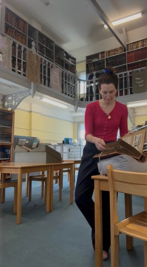

A physical model of the proposed gateway is at the AND office. The model can be handled — the gate opens by hand, and the proposal can be viewed from different angles.
Rona
01 / 14
02Team
Springfield Village Southern Gateway
A team of skilled, trusted collaborators.
I have built a team of skilled, trusted collaborators who have all worked extensively with me to manage and fabricate my previous public artworks.
Fabrication
Benson Sedgwick Engineering · Selinas Lane, Dagenham RM8 A regular collaborator and fabricator of my previous gates.
Powder coating
Bradleys Metal Finishers · 49 Knightsdale Road, Ipswich IP1 A regular collaborator who painted and powder coated several of my previous commissions.
Structural engineering
Fold Engineering · 4 Beau Street, Bath BA1 A regular collaborator who has carried out calculations for many previous projects.
Rona
02 / 14
03Concept Statement
Springfield Village Southern Gateway
Inspiration.
My design responds directly to the history of the site, as well as the atmosphere and identity of the new development. By embedding some of the lesser-known stories from the past into the design, the proposal becomes meaningful and locally relevant.
I visited the Wandsworth archives, which holds a fascinating range of information about the history of the Springfield hospital in the form of newspaper cuttings, books and photographs. I discovered that between 1841 and 1948 the hospital ran the only working farm in London.
An archival journalist's account describes a visit to the hospital where patients were encouraged to engage in farmwork as part of its rehabilitation scheme.

Rona
03 / 14
04Theme
Springfield Village Southern Gateway
The apple, and its segments.
I discovered that the farm included an orchard, which inspired me to use the form of an apple and its segments as a starting point for the design. The form is built from a series of stacked apples with a geometric lattice across each one — inspired by my drawings of cut apple segments and their seed casings.
The brief states that the new development will foster a greater understanding of mental health and reduce associated stigma. The apple serves as a symbol of health and wellbeing — reflecting the ambitions of the development as a place where barriers are broken down.
The nutrients in apples — vitamin C, polyphenols, quercetin — are linked to brain health. The wholesome benefits of "an apple a day" have given rise to a popular mindfulness technique: APPLE is an acronym for five stages of dealing with unhelpful thoughts — Acknowledge, Pause, Pull back, Let go and Explore.
In the context of Streatham Cemetery, the theme also evokes new life growing from a place of remembrance — the seeds of new beginnings.
Rona
04 / 14
05Form
Springfield Village Southern Gateway
A welcoming landmark, not a railing.
The gate creates a welcoming landmark with a soothing, rhythmic design — contrary to one's expectations of a typical railing formed from verticals.
The apple segments are arranged in a beautiful, pleasing geometry, reflecting the calming intentions of the theme. The design aims to be sensitive to its environment, both in theme and appearance. The smooth, flowing rounded shapes are harmonious with the surrounding foliage of the cemetery and park, while the repeating stacked fruit reflects the brick formation of the old retaining wall adjacent to the work.
Visual associations
The geometric lattice within each apple segment operates on multiple visual levels to engage the imagination of the passerby. The intricate internal linework evokes a broader vocabulary of natural shapes — the veins of a butterfly wing, the structured shell of a beetle. The geometry encourages a fluid association of ideas rather than presenting a literal illustration.
Rona
05 / 14
06Physical Model
Springfield Village Southern Gateway
Rona
06 / 14
07Further Details
Springfield Village Southern Gateway
Materials, finishes & durability.
The gate and railings are to be fabricated from 8 mm steel plate which is laser-cut, then zinc-sprayed and powder-coated. The difference in thickness between the frames and the laser-cut panels means the metalwork is very robust and will stand the test of time, yet retains an elegant, fine appearance.
Powder Coat External Zinc Metal Spray System for Steel — 25+ Years Durability — C3 Environment. Degrease to SSPC-SP-1. Grit Blast to BS 7079 SA 2.5. Zinc Metal Spray to BS EN ISO 2063. Bondakote Primer.
Permeability
The design allows plenty of visibility through the apple-segment voids, with solid sections at the edges for robustness. Adheres to a 100 mm maximum aperture at any given point.
Locking
Quote includes door furniture — handle, lock and key. A fob access system can be incorporated if desired.
Ecology
An opening in the railing allows for hedgehogs to pass — preserving the boundary as a wildlife corridor.
Wayfinding & lighting
"Springfield Park" is engraved and infilled into the arch above the gate, on both sides. LED uplighters to be installed in collaboration with the Team to enhance the shadow play shown in the physical model.
Example colour range for the powder coat in a gloss finish. The final shade is a collaborative decision with stakeholders.
Rona
07 / 14
08Dimensions & Steel Specification
Springfield Village Southern Gateway
The Southern Gateway, to scale.
Dimensions and structural specification. An interactive 3D model is available on the web version of this proposal.
The railing matches the original brick retaining wall. The arch and height can be scaled up without compromising the design — by adding rows to the stacked apple pattern and extending the arch outward.
Rona
08 / 14
09Project, Delivery & Implementation
Springfield Village Southern Gateway
Delivery and project management.
My project management approach is based on good communication and collaboration — rigorous quality control while achieving the artistic vision set out in the proposal.
Communication & stakeholder alignment
I work collaboratively, keeping the Springfield Village project team, Barratt London and Lambeth Council up to date via weekly email updates and attended meetings. All aspects of the process are transparent; stakeholders are invited to inspect, comment and feed back on each stage.
Fabrication management & QA
I work closely with my fabricator to ensure the work is produced in line with the vision. I hold regular workshop inspections to review material quality, laser cutting, welds and finishing — providing photographic documentation of fabrication milestones before sharing any drawdowns of incurred costs.
Milestone & schedule management
I manage the project strictly against the client's timeline, establishing internal deadlines to ensure we remain on track for the January 2027 installation.
Project programme
Milestone
Date
Design development
8 Jun – 13 Jul
Consultation with Friends of Streatham Cemetery
—
Draft design submitted
13 Jul
Further design development per feedback
—
Structural engineering calculations
—
CAD drawings ready for fabrication
—
Artworks signed off
10 Aug
Order materials
Aug – Dec
Fabrication period
—
Community workshops with students
Sep / Oct
Stakeholders invited to visit workshop
—
Finish applied
Jan 2027
Delivery and installation
Jan 2027
Sign off
Jan 2027
Rona
09 / 14
10Meaningful Social Impact
Springfield Village Southern Gateway
Two phases of community engagement.
I propose a social impact programme split into two distinct phases — enabling connection with different groups. The first focuses on heritage preservation through consultation with the Friends of Streatham Cemetery; the second provides professional development for young creatives within the borough.
Design phase — Friends of Streatham Cemetery
The Friends of Streatham Cemetery carry the stories, history and heritage of the place. My plan is to run guided walks and listening sessions along the boundary wall — talking through motifs, heritage and the small movements of nature I have looked to embody. Their input will shape some of the symbolism and detailing.
Ultimately, I want the group to leave knowing the gateway honours the character of the place they have stewarded — to feel genuinely represented in something permanent.
Fabrication phase — sixth-form & college art students
Each student will design their own gate, starting with a pen drawing on paper and resulting in a physical miniature model laser-cut in brass. In the context of advancements in AI, young people are worried about the job market and it has never been a more important time to develop one's own creativity.
Students learn to design with structural integrity in mind so that their drawings can be successfully laser-cut. In the second session they integrate their brass panel into a larger model framework — learning to cut and manipulate styrene, and exploring carbon-fibre dowling, acrylic and flock provided in the workshop.
Rona
10 / 14
11Proposed Educational Partners
Springfield Village Southern Gateway
Local sixth forms and colleges.
Potential educational establishments to approach, prioritised by proximity to the site and the relevance of their Art and Design provision.
Bishop Thomas Grant School Sixth Form
Belltrees Grove, Streatham, SW16. The closest Streatham sixth form to the cemetery, with an established A-Level Art and Design department and direct links to UAL and Central Saint Martins.
La Retraite Sixth Form
14 Atkins Road, Clapham Park, SW12. The closest Lambeth sixth form with an A-Level Art and Design programme.
Lambeth College (South Bank Colleges)
Clapham Common South Side, SW4. The borough's main further-education provider, delivering UAL Level 1, 2 and 3 Diplomas in Art and Design.
Rona
11 / 14
12Budget
Springfield Village Southern Gateway
Budget.
Artist fee
Research, project management, design development & edits, engagement, liaison
£18,000
Incurred costs
Materials, fabrication, engraving, plaque, delivery & installation Includes standard gate furniture: handle, latch, lock and fixing point.
£36,335
CAD drawings and calculations
£2,000
Engagement materials
£800
Contingency costs (10%)
£3,915
Total incurred costs
£43,050
Total
£61,050 + VAT
Rona
12 / 14
13Risk & Feasibility
Springfield Village Southern Gateway
Risk and feasibility.
Material / fabrication delays (e.g. steel lead times)
Pre-order materials immediately upon contract signing in August; build a 3-week buffer into the August–December fabrication window.
Site interface mismatch (2.3 m brick wall, new railings vary from drawings)
Physical site survey and laser-measure prior to finalising drawings; connection posts detailed with a 50 mm tolerance allowance.
On-site installation issues (weather, access)
Full RAMS to Barratt London in November — well ahead of the January 2027 installation.
Structural integrity & compliance (wind loading)
Formal structural calculations with Fold Engineering. Gate frames and connection posts engineered to withstand high wind loads.
Coating & finishes failure (corrosion, peeling)
High-grade shot-blasting, hot zinc spray and architectural powder coating via Bradleys Metal Finishers — maximum weather protection, prevents rust bleeding onto historic brick piers.
Detailed RAMS to the principal contractor in November. Installation within a managed cordon during low-traffic hours, with compact lifting gear.
Public safety & aperture trapping (climbing, finger trapping)
All segment voids verified during the digital drafting stage. Maximum 100 mm aperture sphere clearance maintained across the entire framework.
Rona
13 / 14
14In Closing
Springfield Village Southern Gateway
Understanding the brief.
My design approach aligns with the core objectives of the brief through three distinct stages — and a commitment to environmental responsibility.
Historical & institutional context
The brief emphasises the role of the development in reducing mental-health stigma. By researching the Wandsworth archives I uncovered the history of the working farm and orchard that once occupied the site. Using the apple as the central design motif directly honours this history of agricultural rehabilitation.
Physical & ecological integration
The total width of 3,458 mm is distributed between the main gateway, the section of railings and the connection posts. Railing heights match the original brick wall; the architrave extends upward to incorporate the engraved "Springfield Park" wayfinding text. The repeating stacked fruit mimics the rhythm of traditional brickwork rather than standard vertical railings. The 100 mm maximum aperture aligns with health-and-safety barrier specifications; a 130 mm ground opening preserves the boundary as a wildlife corridor.
Social impact & community legacy
Collaborating with the Friends of Streatham Cemetery during design development ensures the symbolism respects their ongoing stewardship of the area. During fabrication, the workshops with local sixth-form and college art students teach each stage of the design process — from sketch to physical prototype.
Sustainability statement
The production model prioritises environmental responsibility by focusing on localised supply lines. Keeping the entire manufacturing footprint within London and the East of England reduces transport emissions and supports the local economy.
Carbon reduction & local sourcing. The proximity between my studio and Benson Sedgwick Engineering in Dagenham (a 20-minute cycle) allows for low-impact transport during fabrication. No long-distance freight or international shipping required.
Material efficiency & circularity. The geometric apple lattice is programmed digitally before laser cutting — maximising sheet-metal efficiency and minimising raw-steel scrap. Offcuts are processed through local metal recycling streams. The hot-zinc-spray-plus-architectural-powder-coating specification ensures a life expectancy of several decades, reducing the need for premature replacement or chemical maintenance.